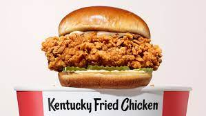
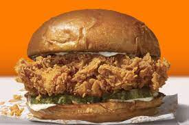

As we know, in the recent years there has been rising attention to the legendary meal that is the Chicken Sandwich. In this webpage we will be exploring four sandwiches that I have chosen to be the best on the parameters of, easy to acquire, cheapness, taste, and quality. Those four sandwiches are McDonald's Chicken Sandwich, Chick-Fil-A Chicken Sandwich, KFC Chicken Sandwich, and the Popeyes Chicken Sandwich.
McDonald's Chicken Sandwich
Price: $3.90
Pros:
Buttermilk chicken tastes as it should
Cheap price
McDonald's availability is spectacular
Cons:
Not enough sauce
Dry
Either too many pickles or not enough
Bun is horrendous and always burnt
Rating: 7/10
It is an overall pretty decent sandwich and will do the job if need be on quick occasion. The problems lie in the dryness due to lack of sauce and the way the bun is typically prepared. Matched with the infamous McDonald's Sprite, it is a great meal.
Chick-Fil-A Chicken Sandwich
Price: $3.05
Pros:
Price
Chick-Fil-A signature sauce goes very well and there is an abundance of it
Good taste
Cons:
No sunday's
Little less convenient
Rating: 8/10
Overall a quality meal. The chicken is good and the sauce is good. The customer service is always fantastic. The only problem is the no Sunday rules sort of ruins the post weekend meal. Also in my opinion it is harder to get to a Chick-Fil-A mainly because of where I live.
KFC Chicken Sandwich

Price: $3.99
Pros:
Chicken is fantastic
Mayonaise is proportionally even and good
Spicy sandwich is great
Cons:
Bun is okay
Rating: 9/10
The only con stopping this sandwich from being a 10 is the bun. It it typically a little soggy and most of the time they smush it into the packaging and it is annoying.
Popeyes Chicken Sandwich

Price: $3.99
Pros:
Chicken is fantastic
Bun is fantastic
Mayonaise and pickles are proportionate
Spicy version is incredible
Cons:
Customer service
Rating: 10/10
This famous sandwich is incredible. Every aspect of it is very good. The only problem is yes while it is a 10 out of 10 sandwich, you may have to wait an hour for it. Depending on the Popeyes you go to, sometimes their customer service is not the greatest. That aside, this sandwich is the king of the chicken sandwiches.